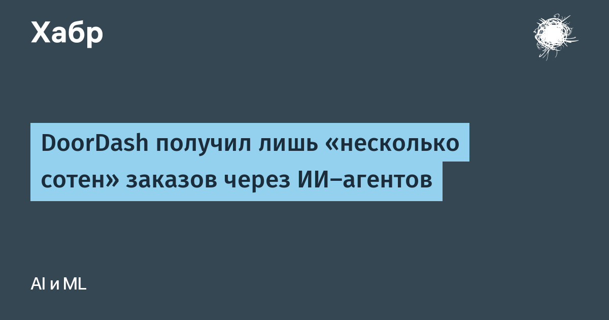

Из финансового отчёта DoorDash за третий квартал 2026 года следует, что сторонние ИИ-агенты — вроде Muse, Instinct и Fo — принесли сервису доставки лишь «несколько сотен» заказов. Для сравнения: за квартал платформа обработала около 993 млн заказов, а ещё в отчёте за 2025 год компания средняя выходила на 3 млн доставок в день. Разница между «несколькими сотнями» и миллиардом — примерно шесть порядков.
Гендиректор DoorDash Тони Сюй назвал использование ИИ-агентов для оформления заказов всё ещё развивающейся областью: «никогда не стоит бороться с гравитацией, но в то же время не нужно предаваться иллюзиям». По его словам, пользователи по-прежнему преимущественно заказывают через само приложение, но компания хочет лучше понять сценарии агентского заказа и наладить отношения со сторонними разработчиками — вплоть до размещения рекламы внутри ИИ-агентов.
За последние полгода компания выпустила почти всё для агентского входа: чат-бот Ask DoorDash с заказами по промптам и фотографиям (июнь), бета-версию CLI, позволяющую ИИ-агенту заказать еду прямо из командной строки (июль), агент для заказов текстом (сентябрь) и MCP-коннектор для корпоративных чат-ботов. То есть признание «нескольких сотен» — не отказ от направления, а честная фотография момента: инфраструктура уже построена, пользовательского поведения ещё нет.
Последние два года агенты-покупщики продавались как канал, который обрушит конверсионные воронки и перераспределит трафик между приложениями. Реальные цифры первого крупного игрока, публично отчитавшегося по этой метрике, показывают обратное: люди заказывают там, где привычно, а агенты пока служат демо-функцией. Для ретейла и сервисов это сигнал не перекраивать аналитику под «агентный трафик», а для разработчиков агентских стартапов — напоминание, что интерфейс доверия (платежи, отмены, споры) пока веселее любой автономии. Через квартал-другой цифры DoorDash станут ориентиром для всей отрасли агентной коммерции.